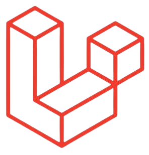

Otentikasi adalah ketika Anda bisa masuk ke dalam sebuah website menggunakan identitas elektronik Anda. Misalnya, Anda menggunakan username, email, serta password. Nah, dengan menggunakan laravel, otentikasi pada sebuah website bisa menjadi lebih sederhana. Sehingga, pengguna-pengguna yang tidak terdaftar dan cenderung membahayakan website bisa dihindari..
PHP FRAMEWORK
PERKENALKAN KAMI KELOMPOK 4
M NABIL GHIFARI MONTESWI
215150707111005
Taufiq Ubaidillah ganteng
215150700111001
Ferdinand Pratama Putra
215150700111040

Rizka Winal Sabrina
215150707111029
ECI EMRIYENI
215150701111002
KAMI KELOMPOK 4
Kami Kelompok 4 dengan semangat juang yang tangguh,
tanpa
kenal lelah. Kami mengerjakan dengan penuh semangat
dan selalu berjuang untuk menjadi yang terbaik.
KELOMPOK 4 JAYA JAYA KAYA

PENGERTIAN Laravel
Laravel adalah framework berbasis bahasa pemrograman PHP yang bisa digunakan untuk membantu proses pengembangan sebuah website agar lebih maksimal. Dengan menggunakan Laravel, website yang dihasilkan akan lebih dinamis.Framework Laravel menggunakan struktur MVC (Model View Controller). MVC merupakan model aplikasi yang memisahkan antara data dan tampilan berdasarkan komponen aplikasi. Dengan adanya model MVC, pengguna Laravel menjadi lebih mudah dalam mempelajari Laravel. Serta menjadikan proses pembuatan aplikasi berbasis website menjadi lebih cepat.
Kelebihan Laravel
Otentikasi yang sederhana
Laravel adalah salah satu framework yang didukung oleh MVC. Namun, apa itu MVC? MVC adalah singkatan dari Model, View, Controller. Ini adalah sebuah desain arsitektur yang membagi pengembangan website menjadi tiga bagian. Pada Model, developers khusus mengembangkan dan mengelola database website. Sementara itu, View berhubungan dengan tampilan informasi yang akan dilihat oleh pengguna. Sedangkan Controller berperan sebagai penghubung antara Model dan View. Nah, framework Laravel didukung oleh konsep seperti ini. Sehingga, proses pengembangan software bisa menjadi lebih cepat, terorganisir, dan memberikan hasil yang optimal.
Didukung oleh MVC
Laravel adalah framework yang dikembangkan dengan konsep testing. Biasanya, testing di sini dilakukan secara otomatis. Tujuannya supaya aplikasi terhindar dari bugs dan errors. Sehingga hasil akhirnya menjadi optimal. Dengan laravel, Anda dapat melakukan testing secara sederhana. Selain itu, Anda dapat memperhatikan kebiasaan pengguna ketika testing, seperti kebiasaan mengklik tautan ataupun mengisi formulir.
Dilengkapi dengan Testing
Tool Artisan adalah tool command line. Dengan tool ini, proses pengembangan yang rumit dan kompleks dapat diatasi dengan baik. Hal ini tentunya sangat mempermudah kinerja software developers.
Memiliki Tool Artisan
Blade Template Laravel
PENGERTIAN
Blade adalah template engine yang disediakan Laravel untuk proses templating pada laravel dan sangat bermanfaat dalam proses pengembangan tampilan halaman website.Tidak seperti fitur templating PHP populer lainnya, Blade tidak membatasi developer untuk menggunakan kode PHP biasa dalam membuat kode untuk tampilan. Semua tampilan Blade dikompilasi ke dalam kode PHP biasa dan kemudian disimpan dalam cache hingga diubah, yang berarti Blade pada dasarnya tidak menambahkan beban atau overhead pada saat aplikasi dijalankan. Blade pada laravel menggunakan ekstensi file .blade.php dan biasanya disimpan di direktori resources / views. Dalam hal ini Blade pada Laravel menggunakan basis template inheritance dan sections.
Kegunaan
Salah satu kegunaan dari Blade Template Engine Laravel adalah penggunaan layout, agar tampilan yang berulang misalnya header, footer, sidebar dan sebagainya tidak perlu dibuat berulang kali sehingga rawan inkonsistensi. Pada umumnya layout ditempatkan dalam sebuah folder yang bernama layout dalam folder views, namun demikian developer tidak dibatasi apabila ingin menggunakan nama lain.
Menampilkan Data
Untuk menampilkan data yang diteruskan ke Blade view, caranya adalah dengan memasukkannya ke dalam kurung kurawal seperti berikut ini :

- Variable "nama" pada kode diatas dapat
ditampilkan dengan cara membuatkannya
seperti array dengan menggunakan
Hello,
{{$nama}}
- Pada laravel Tidak ada pembatasan untuk menampilkan konten dari variable yang diteruskan
ke
view. Output dari fungsi PHP juga dapat ditampilkan. Bahkan, kode PHP apapun dapat dimasukkan ke
dalam Blade echo statement.
Blade Directives
Blade adalah template engine yang disediakan Selain pewarisan template dan tampilan data, Blade juga menyediakan pintasan yang nyaman untuk struktur kontrol PHP umum, seperti pernyataan bersyarat dan loop. Pintasan ini menyediakan cara yang sangat bersih dan singkat untuk bekerja dengan struktur kontrol PHP sementara juga tetap akrab dengan rekan PHP mereka.
!--IF STATEMENT-->IF STATEMENT
Anda dapat membuat pernyataan if menggunakan direktif @if, @elseif, @else, dan @endif. Arahan ini berfungsi identik dengan rekan-rekan PHP mereka:
@if (count($records) === 1)
I have one record!
@elseif (count($records) > 1)
I have multiple records!
@else
I don't have any records!
@endif
Untuk kebalikan dari if else
@unless ($isLogin)
Anda tidak berhak mengakses halaman ini
@endunless
Selain direktif bersyarat yang telah dibahas, direktif @isset dan @empty dapat digunakan
sebagai
pintasan yang nyaman untuk fungsi PHP masing-masing:
@isset($records)
// $records is defined and is not null...
@endisset
@empty($records)
// $records is "empty"
@endempty
Authentication Directives
Arahan @auth dan @guest dapat digunakan untuk menentukan dengan cepat apakah pengguna saat ini diautentikasi atau merupakan tamu:
@auth
// The user is authenticated...
@endauth
@guest
// The user is not authenticated...
@endguest
Jika diperlukan, Anda dapat menentukan penjaga otentikasi yang harus diperiksa saat
menggunakan arahan @auth dan @guest:
@auth('admin')
// The user is authenticated...
@endauth
@guest('admin')
// The user is not authenticated...
@endguest
Switch Statement
Pernyataan switch dapat dibangun menggunakan direktif @switch, @case, @break, @defaultdan :@endswitch
@switch($i)
@case(1)
First case...
@break
@case(2)
Second case...
@break
@default
Default case...
@endswitch
Loops
Selain pernyataan bersyarat, Blade menyediakan arahan sederhana untuk bekerja dengan struktur loop PHP. Sekali lagi, masing-masing arahan ini berfungsi identik dengan rekan PHP mereka:
@for ($i = 0; $i < 10; $i++)
The current value is {{ $i }}
@endfor
@foreach ($users as $user)
This is user {{ $user->id }}
@endforeach
@forelse ($users as $user)
{{ $user->name }}
@empty
No users
@endforelse
@while (true)
I'm looping forever.
@endwhile
Variabel Loops
Saat melakukan iterasi melalui loop foreach, variabel $loop akan tersedia di dalam loop Anda. Variabel ini menyediakan akses ke beberapa bit informasi yang berguna seperti indeks loop saat ini dan apakah ini adalah iterasi pertama atau terakhir melalui loop:
@foreach ($users as $user)
@if ($loop->first)
This is the first iteration.
@endif
@if ($loop->last)
This is the last iteration.
@endif
This is user {{ $user->id }}
@endforeach
Variabel $loop juga berisi berbagai properti berguna lainnya:

Conditional Classes
Direktif @classmengkompilasi string kelas CSS secara kondisional. Arahan menerima array kelas di mana kunci array berisi kelas atau kelas yang ingin Anda tambahkan, sedangkan nilainya adalah ekspresi boolean. Jika elemen array memiliki kunci numerik, elemen tersebut akan selalu disertakan dalam daftar kelas yang dirender:
@php
$isActive = false;
$hasError = true;
@endphp
$isActive,
'text-gray-500' => ! $isActive,
'bg-red' => $hasError,
])>